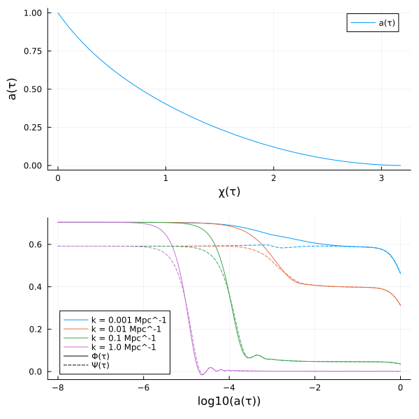
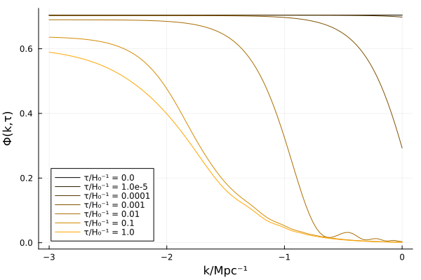
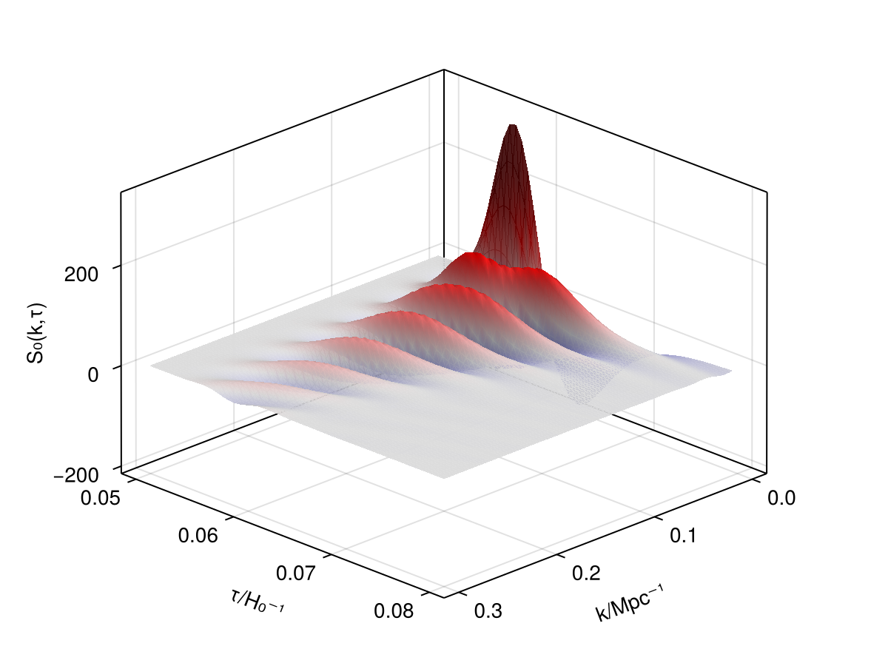

Plotting
First, set up a cosmological problem to solve:
using SymBoltz, Unitful, UnitfulAstro
M = SymBoltz.ΛCDM()
pars = SymBoltz.parameters_Planck18(M)
prob = CosmologyProblem(M, pars)Cosmology problem for model ΛCDM
Stages:
Background: 5 unknowns, 0 splines
Perturbations: 61 unknowns, 5 splines
Parameters:
c₊Ω₀ = 0.26447041034523616
b₊Ω₀ = 0.04936780993111075
γ₊T₀ = 2.7255
I₊ns = 0.965
h = 0.6736
h₊m = 1.0695971529767385e-37
I₊As = 2.099e-9
b₊rec₊Yp = 0.2454
ν₊Neff = 2.99Use SymBoltz' included plot recipes to plot the evolution of background and perturbation quantities over time:
import Plots
ks = [1e-3, 1e-2, 1e-1, 1e0] / u"Mpc"
sol = solve(prob, ks)
p1 = Plots.plot(sol, M.χ, M.g.a)
p2 = Plots.plot(sol, ks, log10(M.g.a), [M.g.Φ, M.g.Ψ])
Plots.plot(p1, p2; layout = (2, 1), size = (600, 600))
Plot the evolution of $Φ(k,τ)$ over conformal time $τ$:
ks = 10 .^ range(-3, 0, length=100) / u"Mpc"
sol = solve(prob, ks)
τs = [0.0, 1e-5, 1e-4, 1e-3, 1e-2, 1e-1, 1e0]
pal = Plots.palette([:black, :orange], length(τs))
color = permutedims([pal[i] for i in eachindex(τs)])
labels = permutedims(map(τ -> "τ/H₀⁻¹ = $τ", τs))
Plots.plot(log10.(ks*u"Mpc"), sol(ks, τs, M.g.Φ); xlabel = "k/Mpc⁻¹", ylabel = "Φ(k,τ)", color, labels)
Visualize the CMB source function $S₀(k,τ)$ in a 3D plot:
using CairoMakie
τs = range(0.05, 0.08; length=50)
ks = range(0.0, 0.3, length=100) / u"Mpc"
sol = solve(prob, ks)
xs = ks*u"Mpc"
ys = τs
zs = sol(ks, τs, M.ST0)
fig = Figure()
ax = Axis3(fig[1,1], azimuth = π/4, xlabel = "k/Mpc⁻¹", ylabel = "τ/H₀⁻¹", zlabel = "S₀(k,τ)")
cmax = min(-minimum(filter(!isnan, zs)), maximum(filter(!isnan, zs))) # saturate both ends of color scale
surface!(ax, xs, ys, zs; alpha = 0.9, colormap = :seismic, colorrange = (-cmax, +cmax))
fig